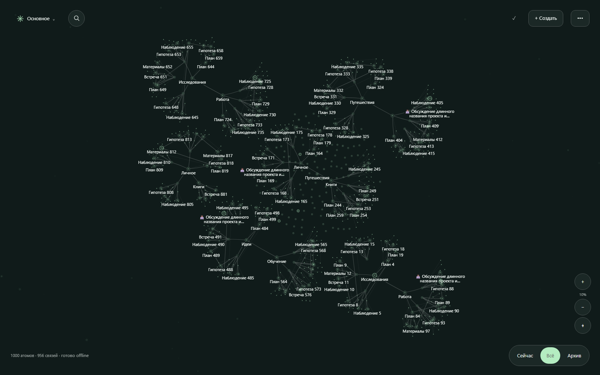
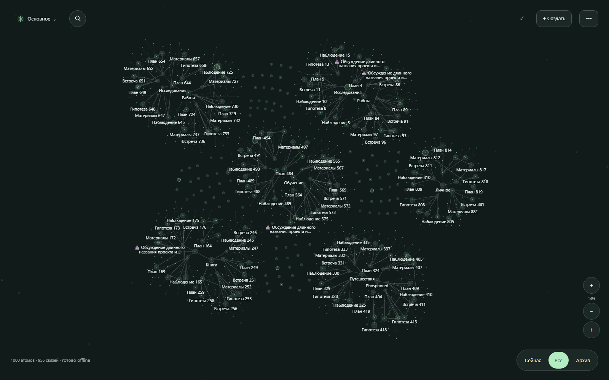
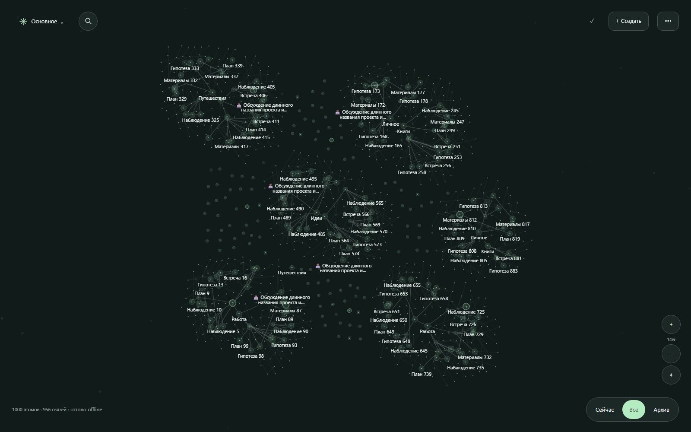

Снимки работающего приложения: проекты, ветви, циклы, длинные подписи, emoji и отдельные заметки. Выберите размер карты и масштаб.
Иерархический каркас, натяжение основных связей.

Все связи участвуют в геометрии, упругие связи работают на растяжение и сжатие.

Листья собраны около своих узлов, далёкие связи не тянут карту.
